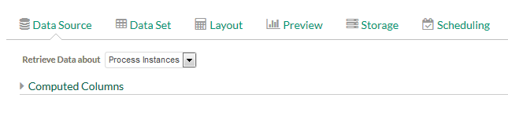
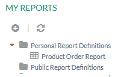
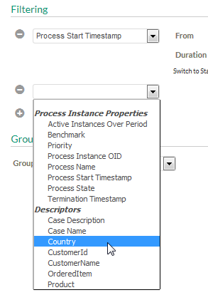

Figure: Creating a new Report
This tutorial demonstrates how to create a report definition with a table layout, which uses computed columns and filtering. Additionally we will schedule this report for execution.
The report definition should provides an overview on the number of product items that have been sold in a process for different customers. We use a computed column to provide customer details containing the customer name and last four digits of the customer Id. Later we will filter the report for specific countries.
Create a model containing a structured data with customer information.
You can also import the completed example model provided by Stardust. Therefore download the following ZIP file containing the model ProductOrders prepared for this example:
You find this model in folder reports. This folder also contains the completed
example report, which you can import as well.
The customer details data should contain the following entries:
For example:
Figure: Structured Data
Create a simple process reading data for the customer details.
Figure: Process Diagram
Open the process properties panel to add descriptors, which will be used in our report. Click on Data Path and add the following descriptors:
Figure: Setting Descriptors
For details on setting process data path a descriptors, please refer to chapter Configuring Data Paths in the Business Process Modeling Handbook.
Save and deploy the model.
Start the process and enter data several times. Enter long numbers for customer Ids.
Figure: Enter customer details with long Id
To create the report definition, switch to the Reporting perspective. Click the Create Ad hoc Report button to create the report definition.
Figure: Creating a new Report
In the Data Source tab keep the default selection to retrieve data about process instances in the Retrieve Data about drop-down list.

Figure: Retrieve data about process instances
Now we create a computed column to display the customer name together with the last four digits of the customer Id.
CustomerName + " - " + (CustomerId - parseInt((CustomerId / 10000), 10) * 10000);
Figure: Enter JavaScript to compute the column
Switch to the Data Set tab to configure the data set.
The data set is now configured as in the following screenshot:
Figure: Setting Data Set properties
Switch to the Layout tab to specify the table layout.
Figure: Layout Settings
Switch to the Preview tab to view the report. The columns are created for each computed column containing the customer name together with the last four digits of the customer id. The table layout is grouped by the name of the ordered items. Additionally a Total column is displayed with the total count for each row.
To set properties for storing the report, switch to the Storage tab. Enter the report definition name and optionally a description of the report. Determine to store the report definition as Personal Report Template.
Figure: Setting Storage properties
To save the report, click the Save icon
 in the upper right corner of the view.
in the upper right corner of the view.
Figure: Saving the Report
You can now find the saved report in the following locations:

Now we filter our report to filter out products from a specific country:

The entered filter should look similar to the one in the following screenshot:
Figure: Setting a report filter
Switch to the Preview tab to see the resulting report. You can see that the column for the country to be filtered out does not appear anymore in the table. Above the table, the filter is displayed in the Parameters section.

Figure: Report preview result with filter
To schedule our report definition for weekly execution perform the following steps:
The reporting daemon must be running to facilitate report execution. It runs periodically to check the next recurrence date for the report definition. Once the next recurrence date arrives, it executes the report and distributes it via the specified delivery method. To start the report daemon:
To set scheduling execution properties do the following:
An E-mail will be sent to you on a weekly basis with the report in HTML format as attachment.
Figure: Report E-mail
You can export our report to an Excel file. In the Preview tab click the Excel button in the left upper corner of the table.
Figure: Export as Excel File
In the upcoming browser dialog select a location to store the report as Excel file. You can now view and edit your report results in Excel format.
Figure: Exported Excel Result